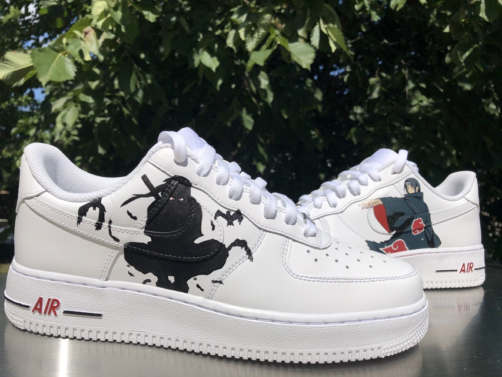

Air Force 1 custom "Itachi"
Esse Air Force 1 foi customizado especialmente por um frânces, ele foi inspirado no personagem "Itachi Uchiha" do anime "Naruto". Por eu gostar muito do anime eu ter acompanhado desde pequeno eu gostaria de ter uma customização como essa em um tênis meu, principalmente por ser meu personagem favorito e poruqê a customização não é feita em todo o tênis e sim é um desenho localizado.